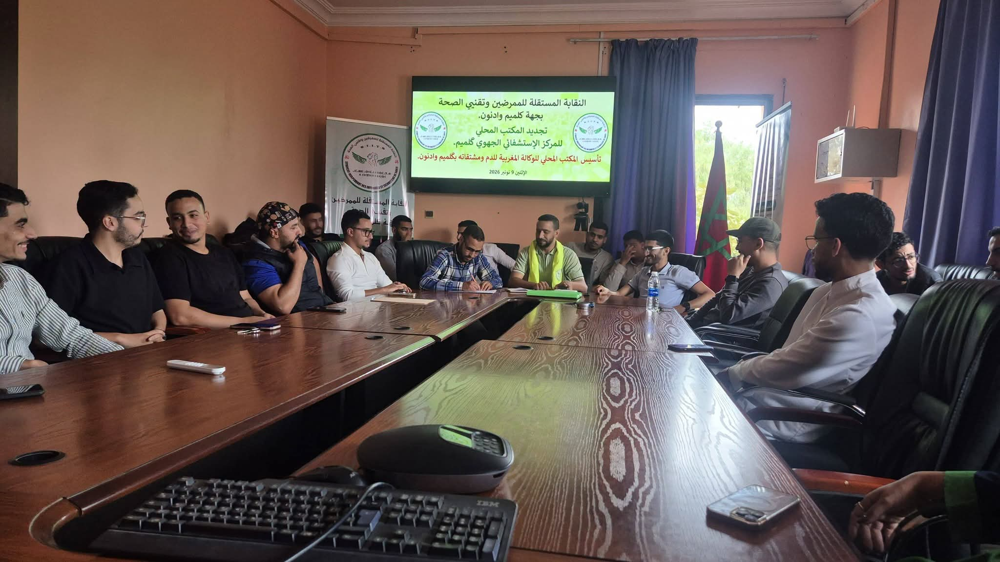

كلميم: انتخاب أيوب الدغيش كاتباً محلياً للمركز الاستشفائي الجهوي ومنير العسري كاتباً محلياً لوكالة الدم ومشتقاته

في إطار مواصلة البناء التنظيمي وتجديد هياكل النقابة المستقلة للممرضين وتقنيي الصحة بجهة كلميم وادنون، انعقد اليوم الإثنين 09 نونبر 2026 على الساعة 16:30 مساءً، بقاعة الاجتماعات بالمندوبية الإقليمية لوزارة الصحة والحماية الاجتماعية بكلميم، الجمع العام التجديدي للمكتب المحلي للمركز الاستشفائي الجهوي كلميم، والجمع العام التأسيسي للمكتب المحلي لوكالة الدم ومشتقاته كلميم وادنون، وذلك بحضور الكاتب الجهوي وأعضاء المكتب الوطني، وفي أجواء طبعتها روح المسؤولية والديمقراطية التنظيمية والالتزام النقابي والنقاش الجاد.
وقد تم انتخاب: ▪️ المناضل أيوب الدغيش كاتباً محلياً جديداً للمكتب المحلي للمركز الاستشفائي الجهوي كلميم. ▪️ المناضل منير العسري كاتباً محلياً للمكتب المحلي لوكالة الدم ومشتقاته كلميم وادنون.
وإذ نهنئ الأخوين على الثقة التي حظيا بها، فإننا نعتبر هذه المحطة التنظيمية تجسيداً لإرادة جماعية تروم تجديد النخب والهياكل، وتوسيع قاعدة التنظيم، وتعزيز آليات التأطير والترافع عن مطالب الممرضين وتقنيي الصحة.
ونؤكد تجدد الالتزام، واستمرارية العطاء، ووحدة الممرضين وتقنيي الصحة في إطارهم؛ فالمسؤولية تكليف، والثقة أمانة، والنضال ممارسة يومية لا تُختزل في المواقع والصفات.
كل التوفيق للمكتبين المحليين في مهامهما التنظيمية والنضالية. وعاشت النقابة المستقلة للممرضين وتقنيي الصحة صامدة حرة أبية.
فتح في تطبيق النقابة